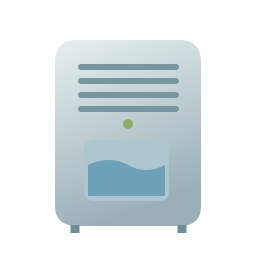
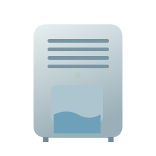
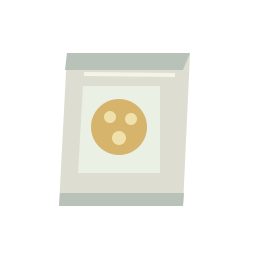

除湿机和吸湿包用于调湿，已有污渍仍需手动清理。此处展示开关与干湿两种资产状态。


十种工具与环境道具，各有正常 / 使用状态；沿用现有海绵、擦水布、护理垫。单枚图标体验，不增加霉菌或多图标比较。
现实工具依材质选用。此小样将图标当作可清洁的表面：吸水纸按压，刮水器拖动，冷风持续干燥，烟灰海绵点按吸附；这些动作经过了游戏化简化。
烟灰和真正的焦化分层处理。清理烟灰后焦痕仍保留；“图标补色滚轮”是恢复图标外观的虚构工具，并不表示真实烧焦物品可以被滚轮修复。
EPA：霉斑清理 / 美国国家档案馆：湿损物品 / 美国国会图书馆：烟灰清理